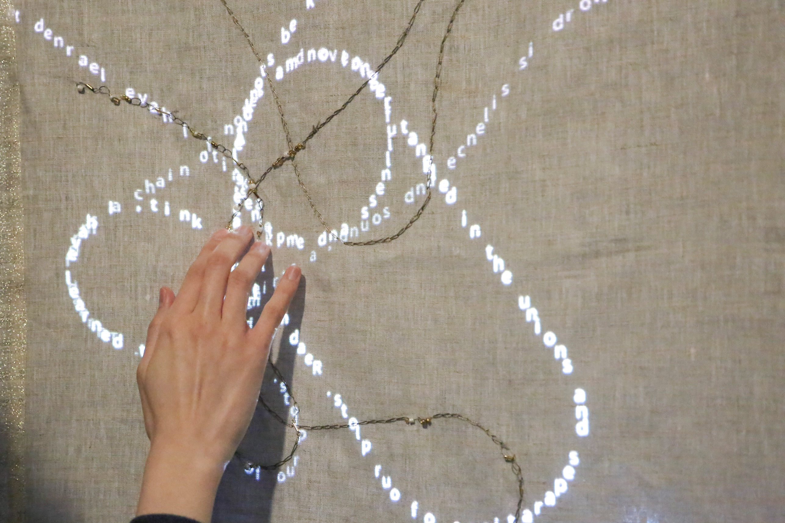
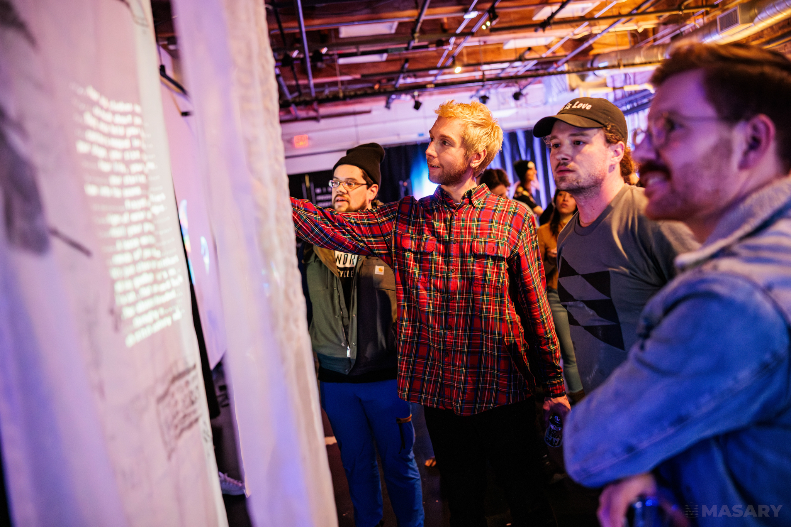
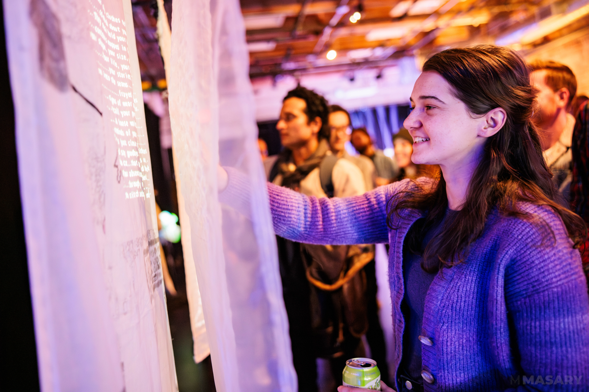

Thread in the Air
Jan - Apr 2024
Interactive projection on textiles, Arduino, Conductive Materials,
Projector.
35'' x 24''
Thread in the Air an electronic textile piece incorporating responsive
audio and projection on textiles. In the digital world projected on a physical tactile surface, words
emulate the structure and movements of threads and cloth–they would sway, fold, or tear–responding to the
audience's touch. “To weave is to speak,” the identical etymology of "textile" and "text" in ancient
languages seems to remind us of the intertwined relationship between the two notions. In the moment of being
touched, narratives are experienced in a non-linear way, text and textiles merging into an integrity.
Threads in the Air is an embodiment of how threads and fabrics shape words, thoughts, and narratives.

The following photos were taken at Art School Confidential (ASC) Ep. 9 presented by MASARY.
Photos by Aram Boghosian.

